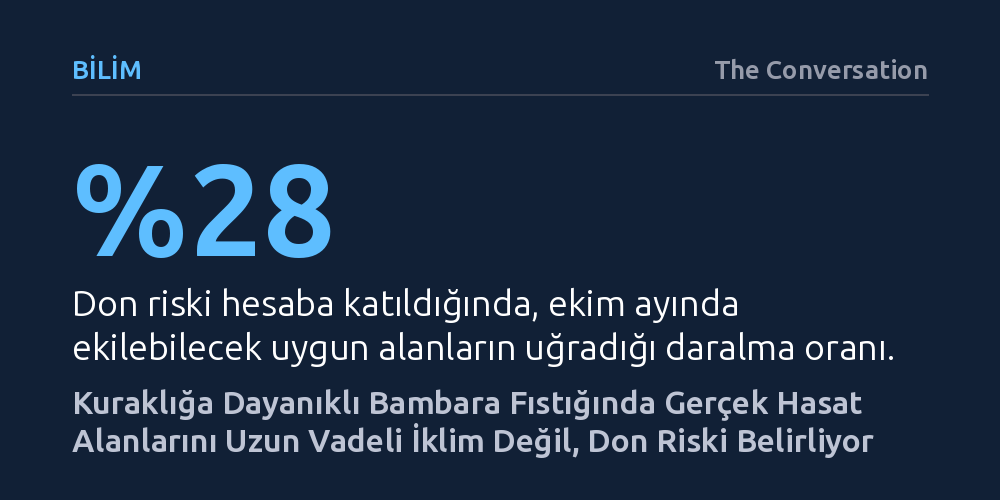

BILIM · The Conversation · 2026-10-12
Güney Afrika ve Esvatini’de 50 yıllık günlük hava verileriyle yapılan modelleme, kuraklığa dayanıklı bambara fıstığı için ekim alanlarını don riskinin yüzde 28 daralttığını ortaya koydu. Uzun vadeli iklim ortalamalarına dayanan geleneksel haritaların aksine, güvenilir hasat için en uygun zamanın ekim ayı olduğu saptandı.
Bir bitkinin bir bölgede yetişebilmesi ile orada çiftçiye düzenli hasat sağlayabilmesinin aynı şey olmadığını, iklim krizine uyumda ortalamaların değil aşırı günlük hava olaylarının belirleyici olduğunu gösteriyor.

Afrika tarımı buğday, mısır ve pirinç gibi az sayıda temel tahıla aşırı bağımlı durumda. İklim krizinin tetiklediği kuraklıklar veya aşırı yağışlar bu ürünleri vurduğunda, geçimini doğrudan topraktan sağlayan küçük ölçekli çiftçiler yıkıcı bir gıda kriziyle karşı karşıya kalıyor. Tek tip tarımın yarattığı bu kırılganlığı aşmanın en etkili yolu, tarlaları ve sofraları iklim şoklarına karşı dirençli yerel türlerle çeşitlendirmek.
Afrika kökenli geleneksel mahsuller, kıtanın zorlu doğa koşullarına binlerce yıl boyunca başarıyla uyum sağlamış durumda. Amarant, börülce, süpürge darısı, tatlı patates ve bambara yer fıstığı gibi "yetersiz yararlanılan" bu türler; kuraklığa ve yüksek sıcaklığa meydan okurken aynı zamanda protein, lif, demir, çinko ve kalsiyum açısından zengin bir besin profili sunuyor.
Bu bitkiler arasında özellikle bambara yer fıstığı öne çıkıyor. Fasulye ve bezelyeyle aynı familyadan olan bu yerli baklagil, tohumlarını tıpkı yer fıstığı gibi toprak altında geliştiriyor. 19. ve 20. yüzyılın başlarında kıtada yaygın biçimde yetiştirilen, haşlanarak, kavrularak ya da un haline getirilip çorba ve lapalarda tüketilen bu ürün, modern ticari tarımın gölgesinde kalsa da küçük çiftçilerin elinde varlığını sürdürmeyi başardı.
Çiftçiler ve tarım planlamacıları, hangi ürünün nereye ekileceğini belirlemek için genellikle arazi uygunluk haritalarına başvuruyor. Ancak bu haritalar çoğunlukla mevsimlik yağış ve sıcaklıkların uzun vadeli ortalamalarını temel alıyor. Bu yaklaşım tarımın en temel gerçeğini gözden kaçırıyor: Mahsuller iklim ortalamalarını değil, her gün yaşanan somut hava durumunu deneyimliyor.
Bu kör noktayı gidermek isteyen araştırmacılar, Birleşmiş Milletler Gıda ve Tarım Örgütü (FAO) tarafından geliştirilen ve mahsul gelişimini su dengesiyle modelleyen AquaCrop yazılımından yararlandı. Çalışmada, Güney Afrika ve Esvatini genelindeki 5.838 farklı bölge, 50 ardışık ekim dönemini kapsayan günlük meteorolojik verilerle simüle edildi.
Araştırma ekibi sadece bambara fıstığının teorik olarak nerelerde yetişebileceğini değil, dört farklı ekim ayında ve yıldan yıla değişen hava koşullarında nasıl bir performans göstereceğini de test etti. Böylece yağışların erken başladığı bölgelerle geç geldiği alanlar arasındaki ince farklar ve riskler ilk kez bu denli geniş ölçekte haritalandırıldı.
Simülasyon sonuçları, yağmura dayalı bambara fıstığı tarımı için en elverişli ekim zamanının genel olarak ekim ayı olduğunu gösterdi. Yağışların başlamasıyla birlikte yapılan erken ekim, bitkinin olgunlaşması için gereken süreyi tanıyor. Ekim ayı geciktirildiğinde ise hasat dönemine doğru ölümcül bir tehlike beliriyor: mevsim sonu donları.
Don riskinin uygun ekim alanları üzerindeki etkisi çarpıcı bir tablo ortaya koydu. Sıcaklık düşüşleri ve don ihtimali modele dahil edildiğinde, ekim ayında ekilebilecek uygun arazilerin oranı bir anda yüzde 28 azaldı. Yazarların vurguladığı gibi, "Bir mahsulün yetişebileceği yer ile güvenilir bir hasat verebileceği yer her zaman aynı değildir." Sadece yağışa ve ortalama sıcaklığa bakılarak yapılan planlamaların çiftçiyi nasıl yanıltabileceği bu bulguyla somutlaştı.
Harita üzerindeki daralma don riskiyle de sınırlı kalmadı. Madencilik, kentleşme, ticari ormancılık, şeker kamışı tarlaları ve meyve bahçeleri gibi mevcut arazi kullanımları hesaba katıldığında, bambara fıstığına ayrılabilecek potansiyel alanlar yüzde 20 daha küçüldü. Bu iki filtre uygulandıktan sonra elde edilen nihai harita, çiftçilerin başarısızlıkla sonuçlanacak yatırımlardan kaçınmasını sağlayacak gerçekçi bir kılavuz sundu.
Elde edilen verilerin sahada karşılık bulabilmesi için tarım danışmanlarının ve yayım uzmanlarının bu hassas haritalarla donatılması gerekiyor. Özellikle 2026 yılında süper El Niño etkisiyle güney Afrika'yı vurması beklenen kuraklık dalgası düşünüldüğünde, küçük çiftçilerin doğru tohumu doğru zamanda ve doğru parsele ekmesi hayati önem taşıyor. Tohuma erişim, işleme tesisleri, ekipman ve pazar kanalları kurulmadığı sürece kuraklığa dayanıklı türlerin potansiyeli kağıt üzerinde kalmaya mahkum.
Güney Afrika hükümetinin Temmuz 2025'te Tarım Ürünlerinin Pazarlanması Yasası kapsamında yerli ürünleri resmen tarımsal ürün statüsüne alması bu açıdan kritik bir dönüm noktası oluşturdu. Bu yasal adım, kırsal toplulukların ve küçük üreticilerin gelirini artıracak ticari fırsatların önünü açıyor. Besin değeri yüksek, zorlu iklim koşullarına dayanıklı 13 yerli türün ticarileşmesi, hem tek tip Batı tarzı gıda sistemini dönüştürebilir hem de bölgeyi yaklaşan iklim şoklarına karşı güvenceye alabilir.